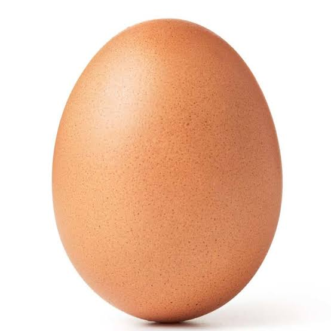
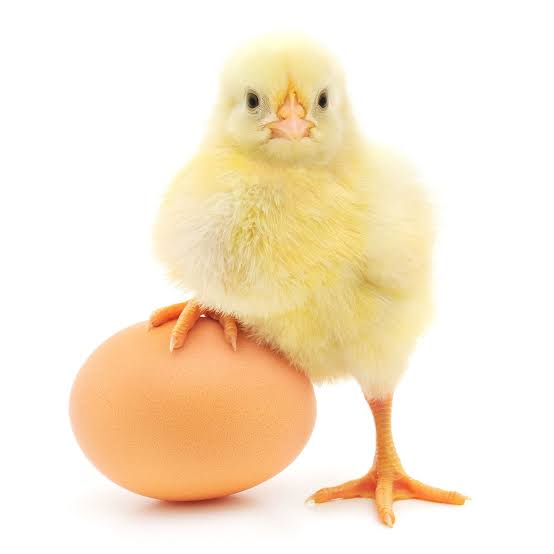
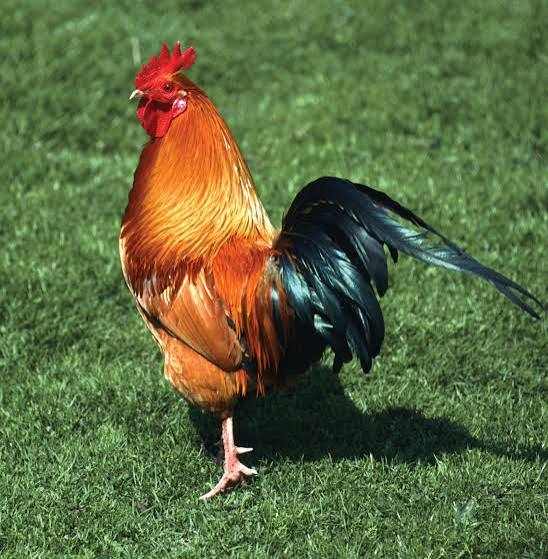
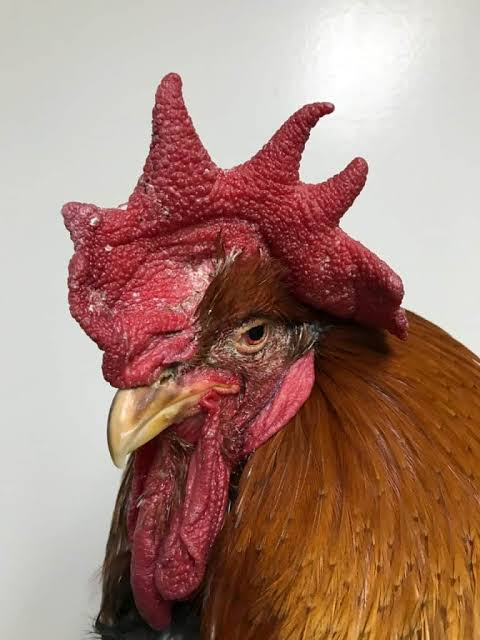
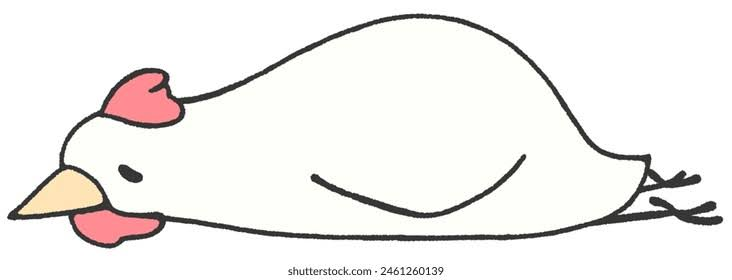
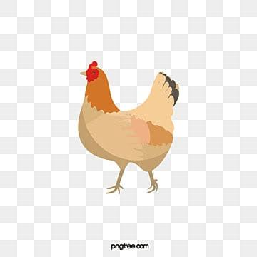

"Man I can't wait to hatch into the World! Wonder What It's like out there?" -Chicken embryo in an egg

To lay a clutch of fertilized eggs, a hen must have first mated with a rooster. The hen will then form an egg- a process which takes all of approximately 25 hours. This process will begin with the formation of the egg yolk, it is produced by the hens ovary during the ovulation process- the yolk is referred to as the oocyte at this stage. As it travels down the oviduct, it will be fertilized internally by the sperm of the rooster. As it continues to travel down the oviduct it becomes covered with a white membrane called ‘vitelline membrane’, as well as some layers of the egg white or ‘albumen’. Still travelling further down the oviduct, a casing for the egg white and yolk will begin to form. Eventually, the shell will be completely developed, and thus the egg is completely formed! The hen will then lay this new life form in a comfortable and quiet spot. A hen will generally lay a clutch of approximately 12 eggs, with each egg being laid a day apart.
"Sup' I was just born idk what I'm doing with this egg though. I don't like it here" -Chick that was just born and is dissapointed in this world

The mother hen will sit on the eggs to maintain the optimum temperature so they can develop until it is almost hatching time. The chick inside the egg will generally grow for 21 days, using the egg yolk as a means of nutrition as it grows. Along with sitting on the eggs, the hen will also use her beak to turn them to aid their development. On about day 19 of the incubation period, the chicks will begin the pipping process. This involves the baby chick using their ‘egg tooth’ to peck a hole in the eggshell around the air sac to access oxygen, before pipping an area large enough for it to be free of its shell. This process can take up to 24 hours and should not be rushed. The chicken will emerge with wet ‘down’ feathers, however they dry quickly, and will be extra fluffy and adorable in no time. Most chickens are able to stand and walk about straight after birth, however some may be a bit wobbly at first. A chick will start developing it’s first true feathers at around 5 days old, and at approximately 12 days the chick will begin to show defining breed bone development, as will it’s wing feathers. By day 18, the chicken should have significant feathering, and by day 30, it will have developed the characteristics that identify it with its breed. Within six months the bird will have developed all of it’s adult features, and is now considered a mature chicken.
"I'm at my PRIME :] " -Chicken thats learned to live with this World

Chicken Younger hens are known as pullets and may be ready to lay as yo ung as 18 weeks, however this will vary between breeds. All birds tend to come into lay earlier during periods of increasing sunlight, or later if they reach matur ity in early winter. A healthy and productive female hen will lay eggs unt il they are about 72 weeks old, however this will also depend on the period of their first moult. Birds have an annual moult in which they lose their ol d feathers, a grow lovely new ones in their place. This generally occurs in late summer or early Autumn, and the result is a tatty and quite alarming looking bird. During moult, chickens will generally cease egg production, although they may lay one here and there, as all their energy and nutri ents are going into producing a delightful new covering of feathers.
"I'm getttin Tired of this Man :[ " -Old Chicken thats given up on this World

As hens get older, they will start showing signs of their ag e. A wrinkled and dull face, heavy eyes, increasing rear size, and lack of energy are al l possible indications that a chicken is approaching old age. De spite this, they will still remain the delightful creatures t hey once were through to their very last days. So while we do not know w hether the chicken or the egg came first, we do know that one does not exis t without the other, and both make up the fascinating life-cycle of our favou rite feathered friends!
"" -Dead Chicken...

and just like that...its gone. The chicken lived its life HATING this world but that may have been a better fate then you can imagine. See most chickens will either be slaughtered or be long dead (in the wild) long before they can reach this phase in their life. Its sad....really
-Fin
Made By ARTariqDev for Hackclub's Noodles YSWS
